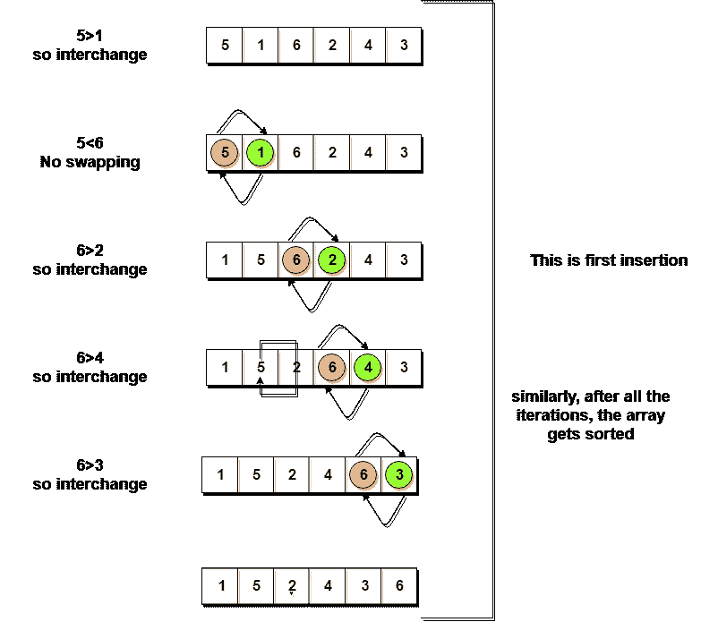
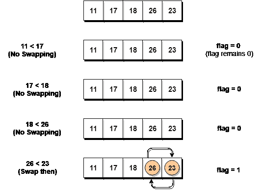
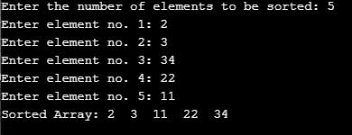

冒泡排序算法
冒泡排序是一种简单的算法，用于对一组给定的n元素进行排序，这些元素以数组的形式提供，具有n个元素。冒泡排序逐个比较所有元素，并根据它们的值对它们进行排序。
如果给定的数组必须按升序排序，那么冒泡排序将从比较数组的第一个元素和第二个元素开始，如果第一个元素大于第二个元素，它将交换两个元素，然后继续比较第二个和第三个元素，以此类推。
如果我们有总共n个元素，那么我们需要重复这个过程n-1次。
它被称为气泡排序，因为随着每一次完整的迭代，给定数组中最大的元素，向最后一个地方或最高的索引冒泡，就像一个水气泡上升到水面一样。
排序是通过逐个遍历所有元素，并将其与相邻元素进行比较，然后在需要时交换它们来进行的。
注意:如果不熟悉数据结构中的排序，首先要学习什么是排序了解排序的基础知识。
实现冒泡排序算法
以下是冒泡排序中涉及的步骤(用于按升序对给定数组进行排序):
- 从第一个元素开始(index = 0)，将当前元素与数组的下一个元素进行比较。
- 如果当前元素大于数组的下一个元素，则交换它们。
- 如果当前元素小于下一个元素，则移动到下一个元素。重复步骤 1 。
让我们考虑一个有值的数组{5, 1, 6, 2, 4, 3}
下面，我们有一个泡泡排序如何排序给定数组的图示。

因此，正如我们在上面的表示中所看到的，在第一次迭代之后，6被放置在最后一个索引处，这是它的正确位置。
同样，第二次迭代后，5将位于第二个最后一个索引处，以此类推。
是时候为冒泡排序编写代码了:
// below we have a simple C program for bubble sort
#include <stdio.h>
void bubbleSort(int arr[], int n)
{
int i, j, temp;
for(i = 0; i < n; i++)
{
for(j = 0; j < n-i-1; j++)
{
if( arr[j] > arr[j+1])
{
// swap the elements
temp = arr[j];
arr[j] = arr[j+1];
arr[j+1] = temp;
}
}
}
// print the sorted array
printf("Sorted Array: ");
for(i = 0; i < n; i++)
{
printf("%d ", arr[i]);
}
}
int main()
{
int arr[100], i, n, step, temp;
// ask user for number of elements to be sorted
printf("Enter the number of elements to be sorted: ");
scanf("%d", &n);
// input elements if the array
for(i = 0; i < n; i++)
{
printf("Enter element no. %d: ", i+1);
scanf("%d", &arr[i]);
}
// call the function bubbleSort
bubbleSort(arr, n);
return 0;
}
虽然上面的逻辑将对未排序的数组进行排序，但是上面的算法仍然是无效的，因为根据上面的逻辑，即使数组在第二次迭代之后被排序，外部for循环也将继续执行 6 迭代。
所以，我们显然可以优化我们的算法。
优化冒泡排序算法
为了优化冒泡排序算法，我们可以引入一个flag来监控元素是否在内部for循环中被交换。
因此，在内部for循环中，我们每次都检查元素交换是否正在进行。
如果对于特定的迭代，没有发生交换，这意味着数组已经被排序，我们可以跳出for循环，而不是执行所有的迭代。
让我们考虑一个有值的数组{11, 17, 18, 26, 23}
下面，我们有一个优化气泡排序如何排序给定数组的图示。

如我们所见，在第一次迭代中，交换发生了，因此我们将flag值更新为1，结果，执行再次进入for循环。但是在第二次迭代中，不会发生交换，因此flag的值将保持0，并且执行将脱离循环。
// below we have a simple C program for bubble sort
#include <stdio.h>
void bubbleSort(int arr[], int n)
{
int i, j, temp, flag=0;
for(i = 0; i < n; i++)
{
for(j = 0; j < n-i-1; j++)
{
// introducing a flag to monitor swapping
if( arr[j] > arr[j+1])
{
// swap the elements
temp = arr[j];
arr[j] = arr[j+1];
arr[j+1] = temp;
// if swapping happens update flag to 1
flag = 1;
}
}
// if value of flag is zero after all the iterations of inner loop
// then break out
if(flag==0)
{
break;
}
}
// print the sorted array
printf("Sorted Array: ");
for(i = 0; i < n; i++)
{
printf("%d ", arr[i]);
}
}
int main()
{
int arr[100], i, n, step, temp;
// ask user for number of elements to be sorted
printf("Enter the number of elements to be sorted: ");
scanf("%d", &n);
// input elements if the array
for(i = 0; i < n; i++)
{
printf("Enter element no. %d: ", i+1);
scanf("%d", &arr[i]);
}
// call the function bubbleSort
bubbleSort(arr, n);
return 0;
}

在上面的代码中，在函数bubbleSort中，如果对于j迭代的单个完整周期(内部for循环)，没有发生交换，那么flag将保留0，然后我们将脱离for循环，因为数组已经被排序了。
冒泡排序的复杂度分析
在冒泡排序中，n-1比较将在第一遍中进行，n-2在第二遍中进行，n-3在第三遍中进行，以此类推。所以比较的总数是，
(n-1) + (n-2) + (n-3) +.....+ 3 + 2 + 1 总和= n(n-1)/2 即 O(n 2 )
因此泡泡排序的时间复杂度为 O(n 2 ) 。
冒泡排序的主要优点是算法简单。
气泡排序的空间复杂度是0(1)，因为只需要一个额外的内存空间，即temp变量。
此外，最佳案例时间复杂度将是 O(n) ，此时列表已经排序。
以下是气泡排序算法的时间和空间复杂度。
- 最坏情况时间复杂度【大 O】:O(n2)
- 最佳案例时间复杂度[大ω]:O(n)
- 平均时间复杂度【大θ】:O(n2)
- 空间复杂度: O(1)
既然我们已经学习了气泡排序算法，您也可以查看这些排序算法及其应用: